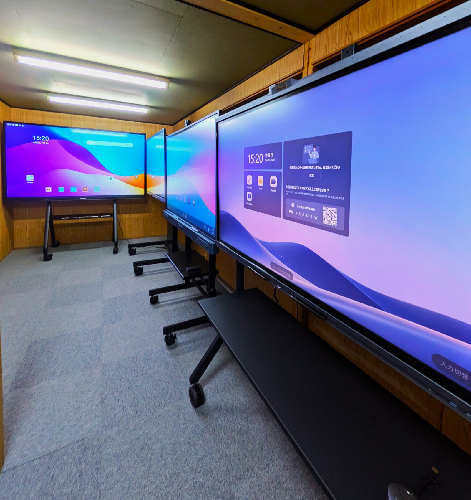
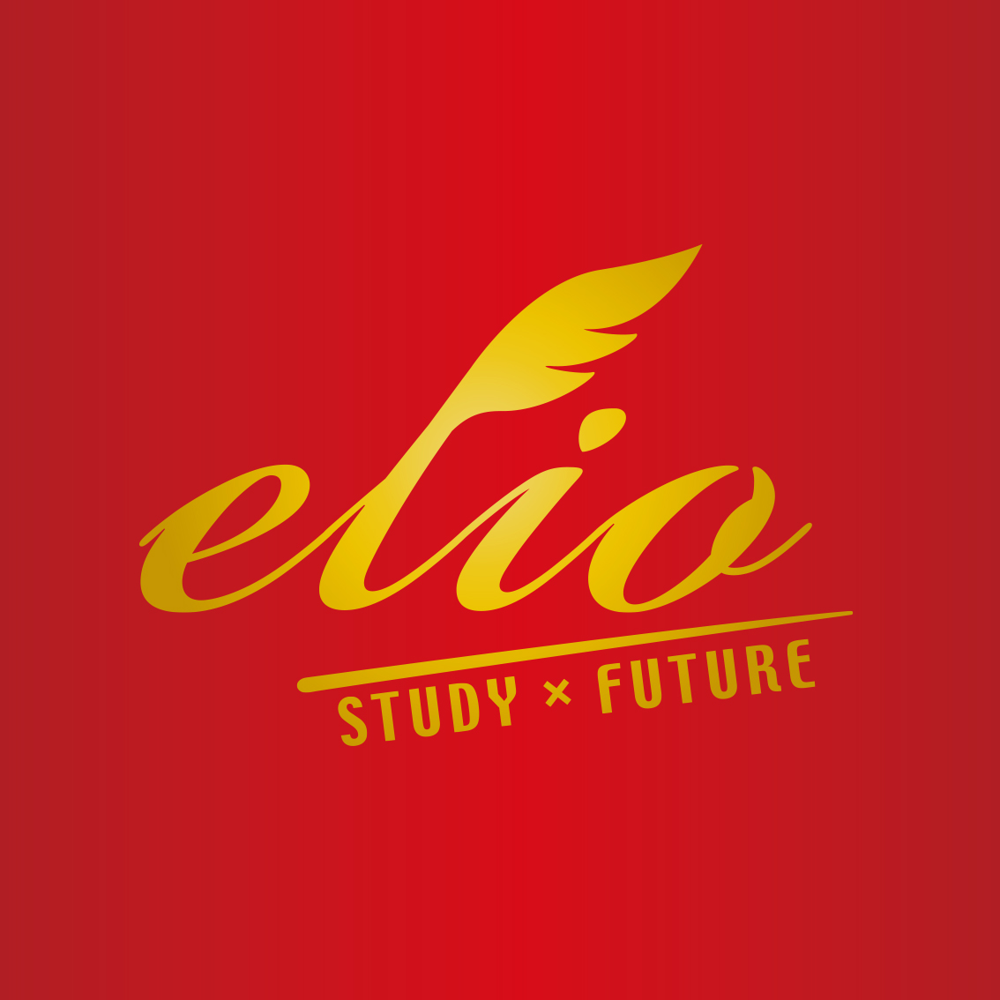

01
学習塾運営
イデアスポット 京都校
鴨川のせせらぎを望むイデアスポット京都校は、すべての講座を少人数制で実施し、一人ひとりに寄り添った丁寧な指導を徹底しています。社会やテクノロジーの変化に合わせて柔軟にカリキュラムを刷新し、続々と新しい講座が誕生します。
主な合格実績
洛星・洛南・高槻・同志社・同志社女子・立命館・堀川高校（探求科）・同志社高校 etc.

Our Services
01
鴨川のせせらぎを望むイデアスポット京都校は、すべての講座を少人数制で実施し、一人ひとりに寄り添った丁寧な指導を徹底しています。社会やテクノロジーの変化に合わせて柔軟にカリキュラムを刷新し、続々と新しい講座が誕生します。
主な合格実績
洛星・洛南・高槻・同志社・同志社女子・立命館・堀川高校（探求科）・同志社高校 etc.
02
日本初の電子黒板比較体験倉庫「Kokuban BASE」を運営。全国の学習塾や中学・高校の関係者を対象に、国内・海外の複数ブランドを実際に触れて選べる機会を提供しています。
最新機から定番まで一度に見て触れることができ、導入後のサポートも相談できます。
サービスサイトへ
03
入試が多様化する今、必要なのは「情報」だけではなく、それを結果に変える「戦略」です。首都圏・関西圏・東海圏を跨いだ併願戦略で、広域な合格実績を誇ります。
主な合格実績
開成・桜蔭・灘・東大寺学園・東海・海陽（特別給費）・渋谷幕張・市川・浦和明の星・栄東（東大選抜）etc.

04
「需要はあるのに、思ったように売れない」「顧客には好評なのに、事業が伸びない」。そんな企業様の課題に、教育現場の知見と経営の実務経験をあわせもつ立場から事業支援を行っています。
事業化支援・コンテンツ開発・マーケティング施策の立案・実行まで一貫してサポートします。
相談する05
教室の外へ踏み出し、新たな領域で経験を積み、その学びを授業へ還元する――教育者こそ、自らの可能性を広げ続ける存在でありたいと考えています。
古着・リユース事業やホームページ制作など、教育とは異なる領域への挑戦を通じて、講師自身が起業家・実務家として社会と関わり続けます。
挑戦の例
古着・リユース事業 / ホームページ・Web制作事業 / その他、随時新領域へ参入中